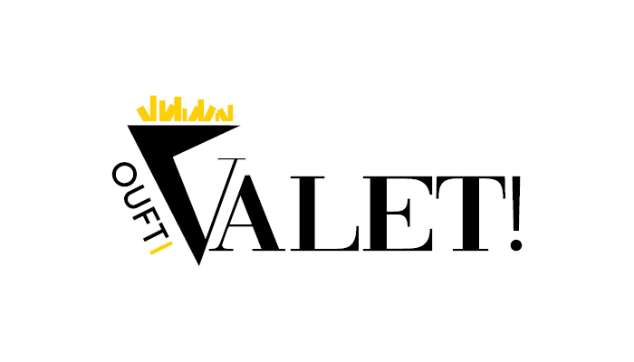
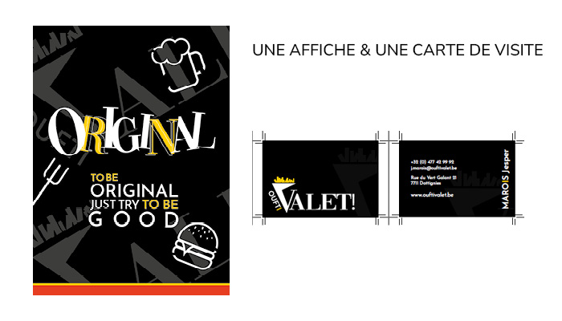
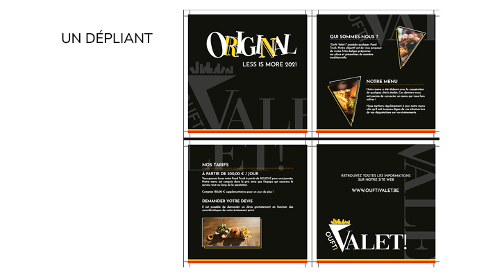
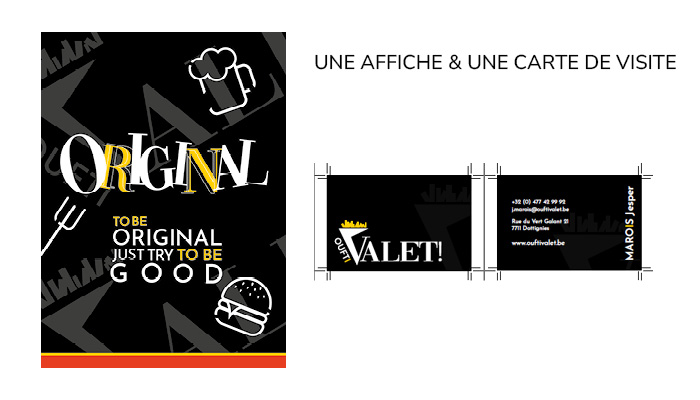
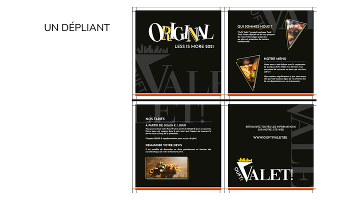
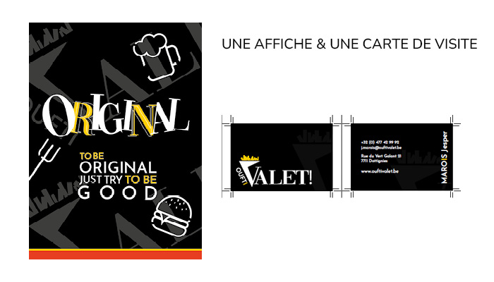
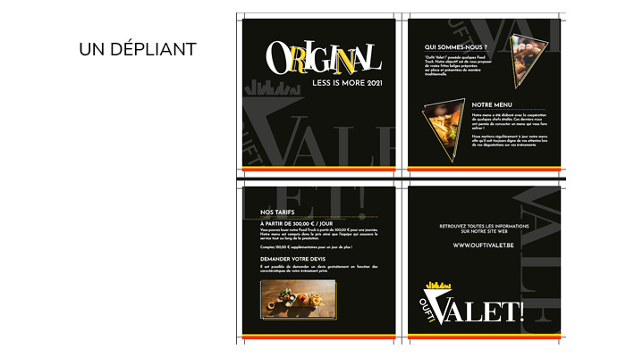

 






This project was my final year work for my graphic design training. I was tasked with creating a complete brand identity, from the logo to the brochure. The brand name I was given was "Oufti Valet" - a luxury fries stand.
I chose a black-and-white color scheme to convey a sense of luxury, but also added yellow to emphasize the "fries" aspect.
I had to design a logo, a brochure, a business card, a bag, a website (including a mockup), and a poster. For most of these, I had to present three different designs (I can show them upon request). This work took me two months and was very enjoyable to work on.